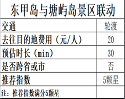
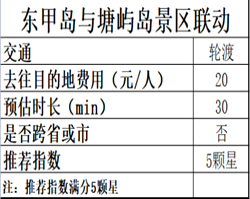

塘屿岛

塘屿岛位于福建省平潭县南端，海岛为扁长形，最南端的沙滩为天然月牙形避风港式沙滩，可用于游泳冲浪的海滩岸线有1000多米，海水非常清澈，地貌除了岩石低丘外，多为沙积平原。距台湾新竹仅68海里，是祖国大陆距台湾最近处。
许多去往东甲岛的游客会从“沃口码头”出发搭乘30分钟轮渡，到达塘屿岛用餐休息后再前往东甲岛。花费20元就能体验到的别样岛屿风情。

塘屿岛位于福建省平潭县南端，海岛为扁长形，最南端的沙滩为天然月牙形避风港式沙滩，可用于游泳冲浪的海滩岸线有1000多米，海水非常清澈，地貌除了岩石低丘外，多为沙积平原。距台湾新竹仅68海里，是祖国大陆距台湾最近处。
许多去往东甲岛的游客会从“沃口码头”出发搭乘30分钟轮渡，到达塘屿岛用餐休息后再前往东甲岛。花费20元就能体验到的别样岛屿风情。
宣传推广网站
福建省海岛旅游网站
 **********@qq.com
**********@qq.com闽 dongjia.com